Bio-Fertilizer
RhizoBoost NitroMax
High-potency symbiotic nitrogen-fixing bacterial consortium that accelerates root proliferation and replaces up to 25% of synthetic urea.
Learn MoreDevelop sustainable solutions that help agriculture grow stronger, healthier and more responsibly through scientific biotechnology and natural botanical wisdom.
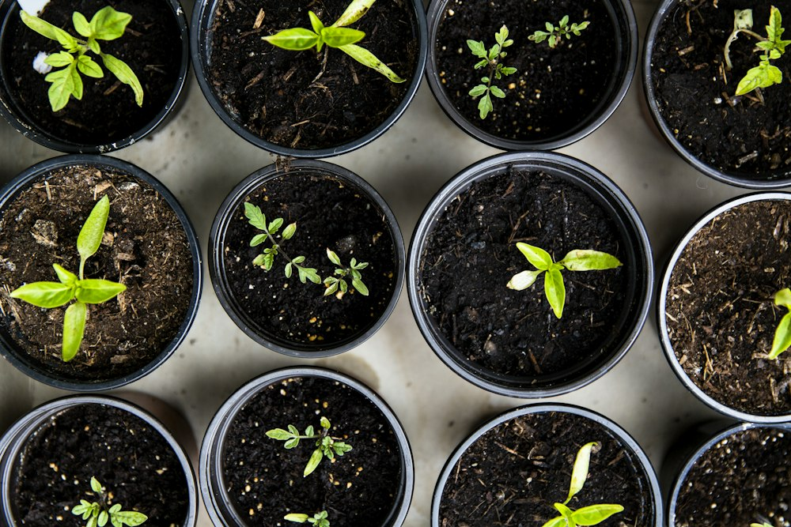
Pioneering Agricultural Biologicals
At VerdantBio, we bridge the gap between rigorous biological science and practical farm productivity. Our mission is to empower farmers with zero-chemical-residue inputs that restore living soil biology and enhance harvest yields.
From our sterile bioreactor fermentation facilities to multi-season field testing across top agricultural universities, every formulation is engineered for maximum microbial CFU stability and real-world farm resilience.
We unite biotechnology breakthroughs with real agricultural needs, ensuring farmers receive tested, reliable, and ecologically restorative biological solutions.
State-of-the-art sterile bioreactors, genomic microbial profiling, and rigorous multi-tier laboratory assays ensure maximum biological performance.
100% biodegradable and residue-free formulations that regenerate depleted soil microbiomes, protect pollinators, and safeguard water tables.
Guaranteed viable colony counts (>1x10⁸ CFU/ml) with 24-month stability designed specifically to withstand harsh tropical field conditions.
Tailored agronomic crop calendars, on-ground field trials, and direct agronomist support to help growers achieve higher quality and better profits.
Science-backed biological formulations developed for optimal plant nutrition, organic crop protection, and sustainable soil rejuvenation.
High-potency symbiotic nitrogen-fixing bacterial consortium that accelerates root proliferation and replaces up to 25% of synthetic urea.
Learn MoreBroad-spectrum botanical bio-repellent derived from medicinal plant alkaloids, offering zero-residue protection against sucking pests and mites.
Learn More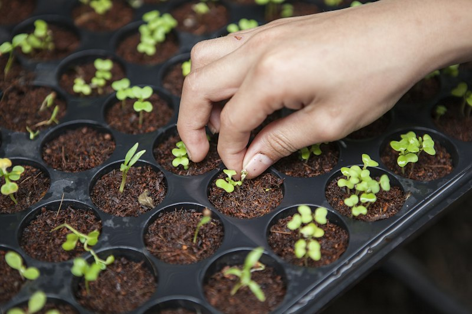
Bio-StimulantCold-extracted marine Ascophyllum nodosum fortified with potassium humate to trigger vegetative vigour, flowering set, and drought resistance.
Learn More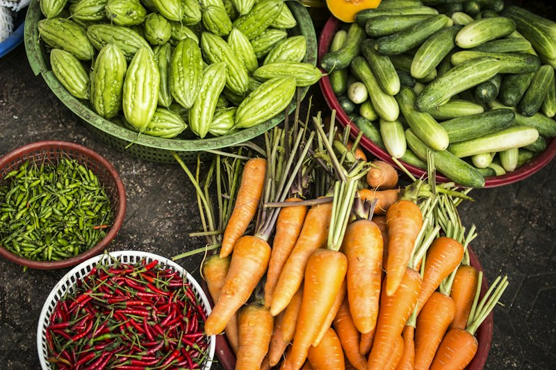
Soil EnricherOrganically chelated multi-micronutrient matrix designed to restore depleted trace minerals (Zn, Fe, Mn, B) directly into plant-accessible forms.
Learn More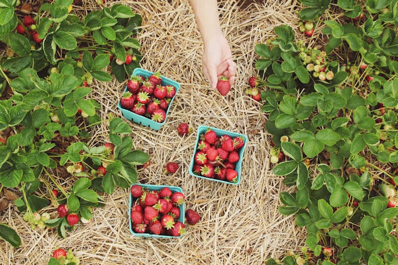
Biological FungicideBeneficial fungal bio-control agent producing antagonistic enzymes that suppress wilt, root rot, and damping-off without harming earthworms.
Learn More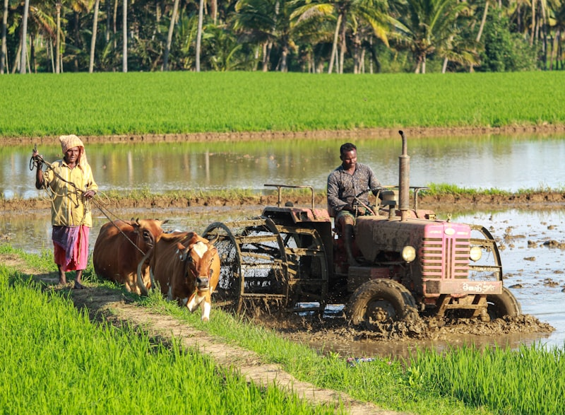
Bio-StimulantEnzymatic amino acid hydrolysate with bioactive fulvic acids that improves pollen germination, fruit elongation, and marketable crate weights.
Learn MoreExplore our real-world agricultural projects demonstrating proven yield increases, chemical reduction, and soil revitalization across diverse farming regions.
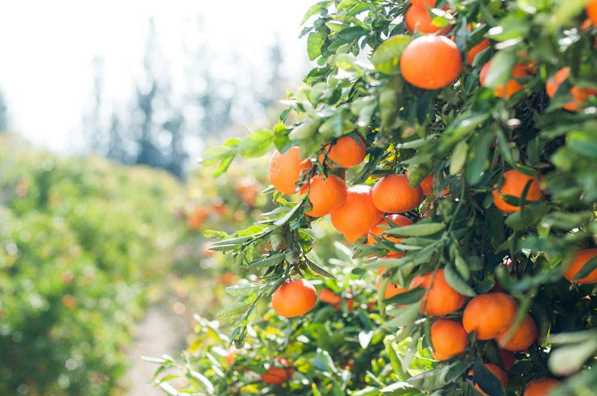
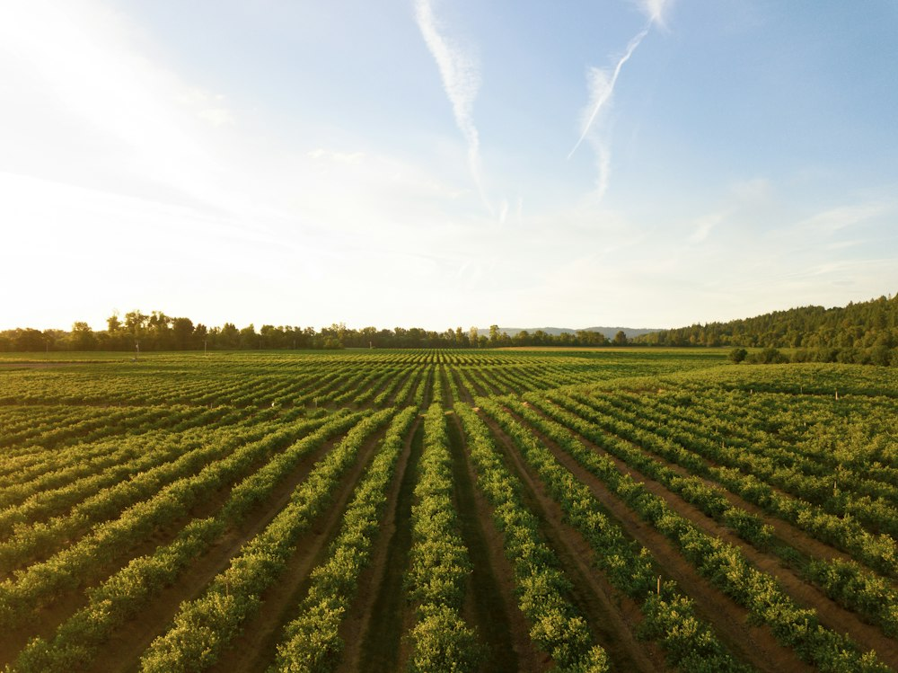
Discover our integrated service and biotechnology portfolio engineered to tackle the modern challenges of climate variability and soil degradation.
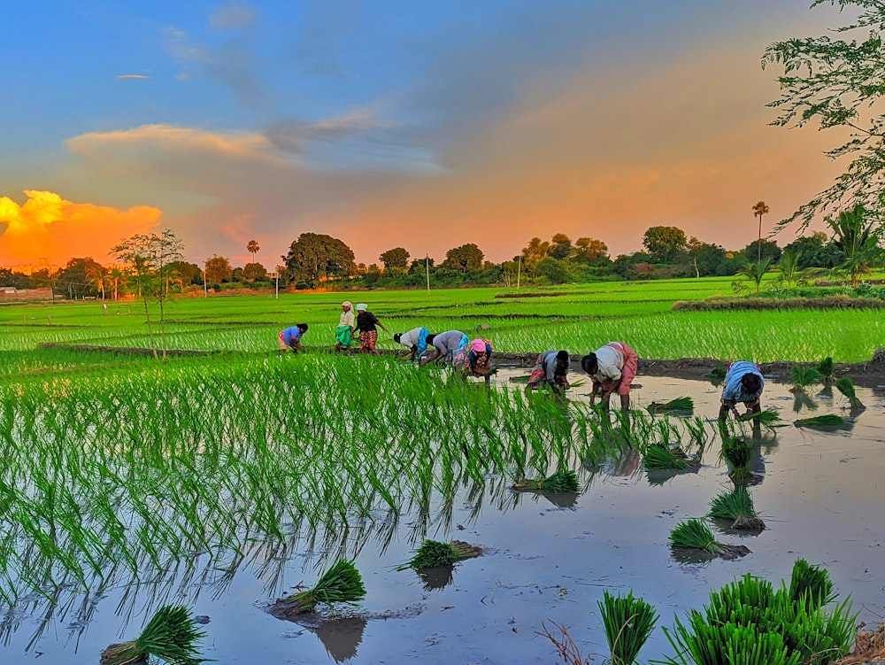
We empower crops to activate their natural systemic acquired resistance (SAR). Our biological spray schedules protect foliage against biotic stresses while maintaining pollinator-friendly ecosystem balance.
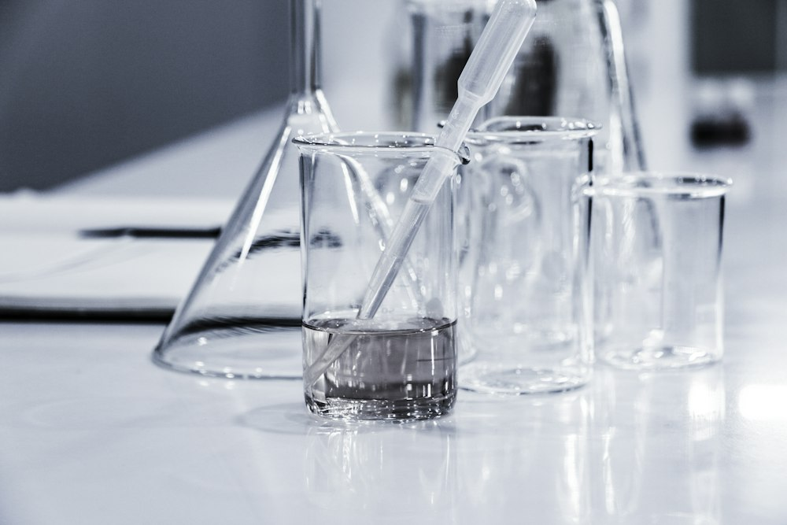
Through our high-density sterile fermentation reactors, we culture pure bacterial and fungal consortia with guaranteed minimum viable colony forming units (CFU), free of pathogenic contaminants.
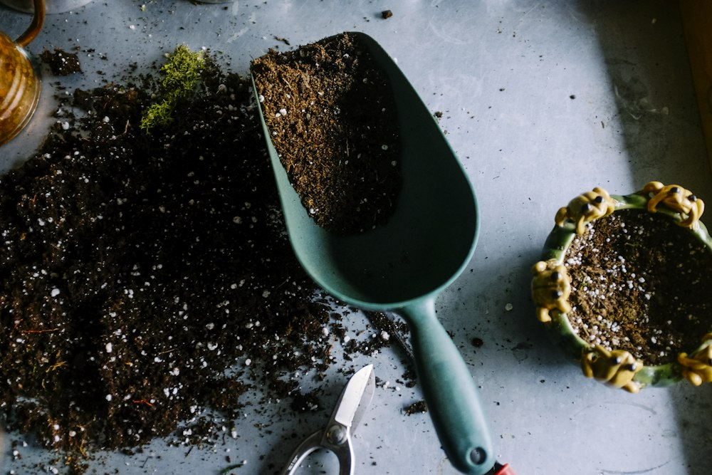
Healthy crops begin with living soil. Our microbial inoculants break down bound mineral phosphorus, solubilize potassium, and replenish humic humus layers damaged by decades of chemical oversaturation.
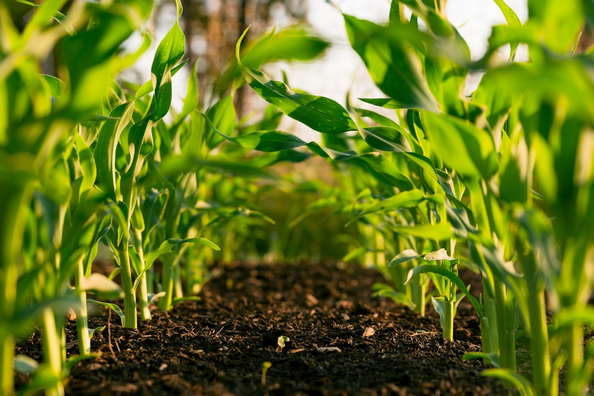
Our certified agronomists provide actionable on-farm guidance, soil test interpretations, and tailored biological spray calendars to ensure farmers maximize efficiency at every phenological stage.
Talk to our team about sustainable solutions for your agricultural needs. Whether you are an individual grower, cooperative, or agribusiness distributor, we are here to support your success.
Get In TouchDiscover how VerdantBio's certified biological inputs have transformed crop quality, soil health, and grower profitability.
"VerdantBio's microbial formulations transformed our commercial trial orchards. We saw a 22% yield improvement while cutting chemical input costs significantly. The crop consistency was remarkable."

"The zero-residue certification gave our grapes effortless clearance into European export markets. Their botanical crop protection program kept downy mildew away completely without synthetic chemicals."
"After two seasons with RhizoBoost and TerraVital, our soil organic carbon and water retention visibly improved. Even during hot summer spells, the crop stayed resilient and lush."
Have questions about our bio-fertilizers, organic crop protection, or distributorship opportunities? Send us a message and our agronomic team will respond within 24 hours.
Visit our biotechnology research center or contact our regional customer advisory team directly.
Plot No. 48, Agri-Biotech Innovation Park, Industrial Area Phase II, Pune, Maharashtra 411014, India
Monday – Saturday: 9:00 AM – 6:30 PM (IST)
Fill out the form below and an agricultural specialist will contact you shortly.